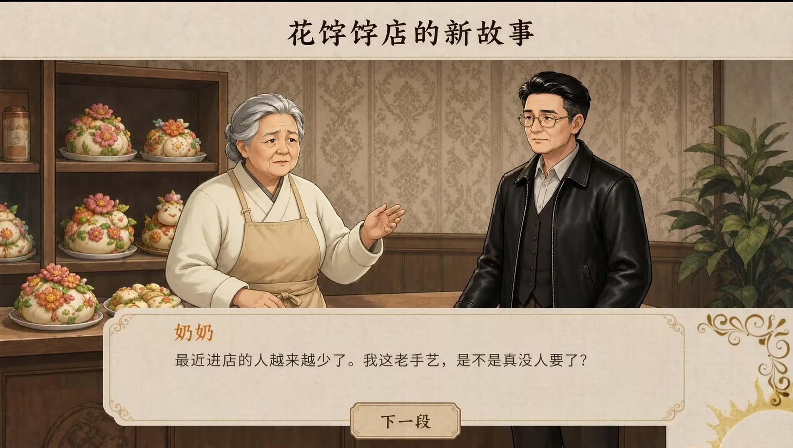

← 返回
面塑凤凰 · 八法匠心
👁
🔊
⛶
👵
面塑奶奶
掤
起面
捋
揉圆
挤
塑身
按
贴饰
采
点睛
挒
制尾
肘
合尾
靠
成凤
掤
托起面团
按住鼠标左键向上拖动，感受面团在掌心成形
按住鼠标左键，按提示方向拖动
↕
环视中 · 拖动画面看四周

🔊 点击播放语音
跳过剧情 ›
↻ 横过手机，看得更清楚
作品完成
凤凰涅槃
指尖生花
八法皆到位，三尾已成形。你的面塑凤凰出炉了！拖动鼠标可以360°欣赏你的作品。
再捏一次
返回 VR互动
正在准备 3D 场景…